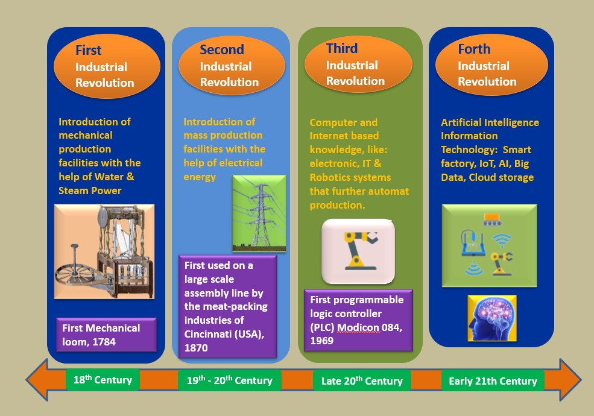

Overview of the Industrial Revolution
The Industrial Revolution was a profound transformation in manufacturing processes, originating in Britain in the late 18th century. It marked the

transition from hand production methods to machines, new chemical manufacturing, and iron production processes. This era witnessed the rise of mechanized
factories, steam power, and technological innovations, dramatically altering the economic and social
fabric of society.
This revolution catalyzed significant societal changes, including urbanization, as people moved to
cities for factory work. It led to the development of new social classes and fundamentally changed the
nature of work and daily life. The Industrial Revolution laid the foundation for modern industrial
society, setting the stage for further technological advancements and economic growth.